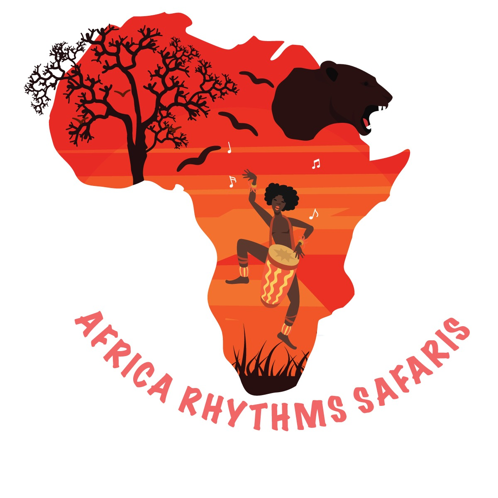

The logo was designed for Africa Rhythms Safaris to reflect the vibrant culture and adventurous spirit of their safari experiences. I created this design to capture the essence of Africa's natural beauty and wildlife while highlighting the rhythmic, cultural elements unique to the continent. The warm colors and dynamic imagery aim to appeal to a wide audience, showcasing the excitement and environmental richness of the safari adventures offered.
